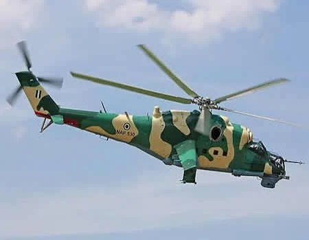

NAF burns 10m litres fuel in 2,900 security missions

The Nigerian Air Force (NAF) recorded more than 2,900 sorties and over 6,100 flying hours between November 2025 and September 2026, using close to 10 million litres of Jet A-1 aviation fuel, according to the service. The figures were announced ahead of the first anniversary of Chief of the Air Staff Air Marshal Sunday Aneke on October 30.
NAF Director of Public Relations and Information Air Commodore Ehimen Ejodame said the missions included precision air strikes, armed reconnaissance, surveillance and close air support. He said they were intended to weaken hostile groups, restrict their movement and support ground forces. Ejodame said mission planning relied on actionable intelligence, defined objectives and assessments of results, with the aim of ensuring each sortie had a clear operational purpose.
The service said the operations formed part of Aneke’s agenda for operational effectiveness, personnel welfare, technological advancement and accountability. It reported promotions for 57 senior officers, 1,534 senior non-commissioned officers and 1,936 non-commissioned officers. More than 550 personnel took part in international training and professional engagements, while over 6,000 received local training. The NAF also cited improvements to allowances, medical support and accommodation, as well as the return of welfare airlift services for personnel in frontline areas.
On fleet and infrastructure, the service said it received five helicopters in September: three AW-109 Trekker Type B aircraft and two H125s. It is pursuing 12 AH-1Z attack helicopters and other aircraft and unmanned systems. Six L-39ZA aircraft are undergoing reactivation and upgrades in Slovakia and Nigeria, while a C-130 is undergoing depot maintenance in Portugal. Of 284 approved infrastructure projects, 145 were complete and 139 ongoing, covering facilities including housing, medical and academic sites, roads and utilities.
Ejodame also cited steps to strengthen aviation safety and accountability, develop procedures for responding to civilian harm, and plan an Open-Source Intelligence Centre. Local production efforts include aircraft release cartridges, a bomb-loading trolley and ground-tested 57-millimetre rockets, the NAF said. The service said it aimed to convert investments in personnel, equipment, training and infrastructure into improved readiness and operational outcomes.
Source: Punch